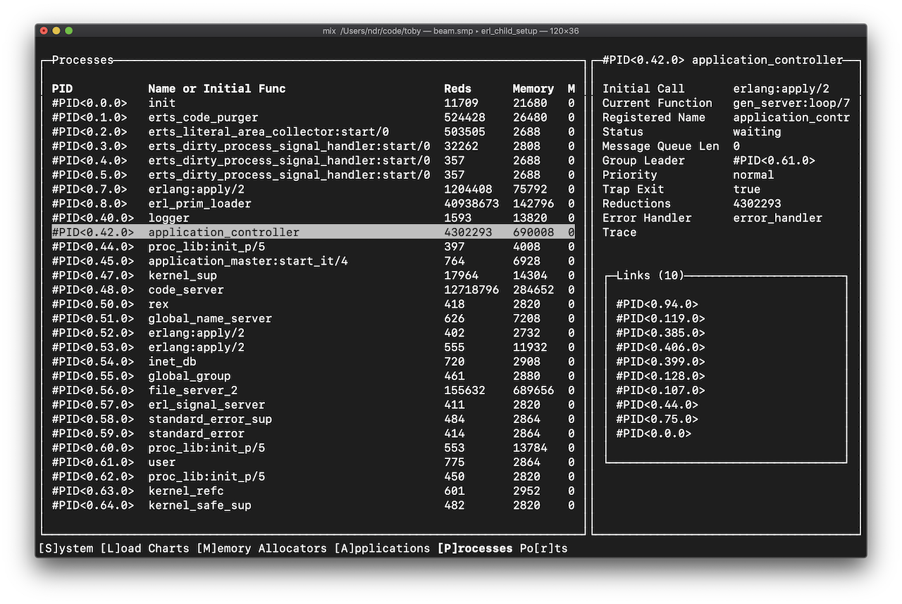

Building Terminal Apps with Elixir
A Tale of Yak Shaving

Elixir may seem like an odd choice for building terminal applications. In fact, when I started this project, that’s exactly what I thought.
Before I get into that, I’ll first give you some background as to why I even would try something like that, then I promise to get back to building terminal apps.
Connecting to remote Observer nodes
Where I work, we run our Elixir apps in production as Erlang OTP releases built with Distillery. The OTP releases run in Docker containers. The containers are now orchestrated with Kubernetes, but at the time we were using Rancher.
A little over a year ago, I desperately wanted to connect the Erlang ObserverIn case you haven’t used it, Observer is one of my favorite tools in the Erlang toolbox. I don’t know of any other VM that provides the same level of insight into the running system. Start it with :observer.start() in the IEx shell.
to one of our production nodes. I was debugging some background jobs that we’d implemented via gen_server processes, and was confused by their behavior in production.
Observer is a GUI application built with wxWidgets, so while it runs on most platforms, you do need a desktop environment to run it. It’s also possible to connect it to remote Erlang nodes, including those running on headless servers.
Connecting Observer to a remote Erlang node is usually accomplished with SSH port forwarding to avoid needing to publicly expose your Erlang node.
Each server runs a program called epmd (Erlang Port Mapper Daemon) which acts as a name server (or, say, a phone book) for all the Erlang nodes running on the server. When an Erlang node starts up in distributed mode, it sends its name and port to epmd for registration. All of the currently registered names can be retrieved with epmd -names or from an Erlang shell with net_adm:names().
In the same way, Observer gets these names from epmd and displays them under the “Nodes” menu item. So the magic of SSH port forwarding here is that we can just trick Observer into think it’s talking to the local epmd.
First, on the remote server, get epmd’s port and the port of the node you’d like to connect to:
And now forward both of those ports to localhost:
Now the remote epmd and remote node are both listening locally, which allows Observer to connect to the remote epmd and node as if they were also running locally.
Containers unfortunately add a few more layers to this, as Docker and the container orchestrator both have their own networking layers complete with their own port mappers. For example, connecting to a container via its port requires mapping a host port to the container port and connecting via the host port.With Kubernetes, this is possible with the kubectl port-forward command. There’s even a nice script to automate it.
I tried for quite a while to thread my connection through all the layers in our container running under Rancher, but I was never able to get it working with dynamic ports.
An Erlang observer for the terminal
In my frustration, I started to ask why I can’t just run this thing in the terminal. I’m a big fan of the terminal top and htop utils for exactly this reason. They work everywhere: on my Mac, on my Linux machine, and on whatever random VM I happen to be ssh-ed into.
So I started to look around and I discovered etop, which comes bundled with Erlang:
iex> :etop.start()
========================================================================================
nonode@nohost 21:56:50
Load: cpu 0 Memory: total 23976 binary 84
procs 56 processes 6879 code 7958
runq 0 atom 388 ets 598
Pid Name or Initial Func Time Reds Memory MsgQ Current Function
----------------------------------------------------------------------------------------
<0.64.0> group:server/3 '-' 34192 973332 0 group:server_loop/3
<0.111.0> etop_txt:init/1 '-' 6970 42348 0 etop:update/1
<0.8.0> erl_prim_loader '-' 1161 196980 0 erl_prim_loader:loop
<0.62.0> user_drv '-' 1109 13820 0 user_drv:server_loop
<0.48.0> code_server '-' 214 284652 0 code_server:loop/1
<0.113.0> erlang:apply/2 '-' 31 2808 0 observer_backend:fla
<0.66.0> kernel_refc '-' 17 3192 0 gen_server:loop/7
<0.44.0> application_master:i '-' 2 4008 0 application_master:m
<0.61.0> supervisor_bridge:us '-' 2 13784 0 gen_server:loop/7
<0.65.0> kernel_config:init/1 '-' 2 2820 0 gen_server:loop/7
========================================================================================
Erlang Top prints some basic system stats along with the top 10 processes (sorted by reductions by default). It’s a great tool for every BEAM user’s toolbox to get an overview of the system health before you start digging deeper with other tools.
But what I was still really searching for was a real application like Observer, only text-based. For example, I wanted to visualize the supervision tree, find a process in it, and kill it, just by moving my cursor and pressing a few keys.
So I set out to build my own text-based Observer.
Termbox and C and NIFs, Oh My!
I knew that in order to be able to scroll with the arrow keys or click with the mouse, I’d need to allow the application to capture keyboard and click events.
Then I realized fairly quickly that it’s not as easy as it sounds. While Elixir & Erlang provide the ability to get a line (IO.gets/1) or a number of bytes/characters (IO.getn/1) from stdin, this is always line-buffered, meaning they don’t receive anything until either the <enter> key or <ctrl-d> key is pressed.
The explanation for this is that the terminal runs in what’s called cooked mode by default, which pre-processes (cooks) input before giving it to the program. Programs that need to handle key presses (for example, editors like vi and emacs) work by switching to raw mode, which allows for polling for each individual event.
Since there’s no Erlang API for changing the mode, I realized I’d have to do it myself from C code, and I’d need some sort of Port or NIF for that to work.
Moreover, terminal applications control the terminal by sending it ANSI escape codes. These codes can vary by terminal and system, so applications typically use a database called terminfo to find correct control sequences for the current system.
Because this is all still pretty tedious, most applications use a library like curses or ncurses to do the heavy lifting, so they can focus on the application logic.
In my case, I’d already had my eye on an alternative called termbox, which aims to provide a more minimal API for controlling the terminal to write text-based user interfaces. Termbox treats the terminal as a grid of cells, and provides 12 main functions to manipulate it:
tb_init() // initialization
tb_shutdown() // shutdown
tb_width() // width of the terminal screen
tb_height() // height of the terminal screen
tb_clear() // clear buffer
tb_present() // sync internal buffer with terminal
tb_put_cell()
tb_change_cell()
tb_blit() // drawing functions
tb_select_input_mode() // change input mode
tb_peek_event() // peek a keyboard event
tb_poll_event() // wait for a keyboard eventThis minimal API is certainly much lighter than the ncurses API. On my machine, termbox.h is only 320 lines, while ncurses.h is 2094 lines. While that also means it’s missing some features, I figured a minimal API would be easier to build on top of, as I didn’t want to spend so much time working in C, and was more interested in building abstractions in Elixir.
So the next step was figuring out how to use it from Elixir. To do that, I created a library called ex_termbox that provides bindings to the termbox library as NIFs dynamically linked to the Erlang VM process.
NIFs aren’t always a good idea, as they make it very easy to crash the otherwise rock-solid VM with segfault errors, but if there’s no better alternative and it’s properly tested, I think using NIFs can make sense.
For the most part, the NIFs in ex_termbox are thin wrappers around the corresponding termbox function. For example, the NIF for retrieving the terminal width looks like this:
// c_src/termbox_bindings.c
static ERL_NIF_TERM extb_width(ErlNifEnv *env, int argc,
const ERL_NIF_TERM argv[]) {
int32_t width = tb_width();
return enif_make_int(env, width);
}NIFs can receive Erlang terms as arguments and need to return Erlang terms. The erl_nif.h header declares functions and defines macros that help with converting to and from native types.
On the Elixir or Erlang side—when it comes to NIFs there’s no real difference—it’s necessary to load the native implementation (i.e., the shared lib) and define a stub implementation for each NIF:
# lib/ex_termbox/bindings.ex
defmodule ExTermbox.Bindings do
@on_load :load_nifs
def load_nifs do
so_path = Path.join(:code.priv_dir(:ex_termbox), "termbox_bindings")
:erlang.load_nif(so_path, 0)
end
def width do
raise("NIF width/0 not implemented")
end
# other stubs...
endWith the bindings in place, the Elixir version works just like the C library.
The Imperative Mood
At this point, I thought I was done with yak shaving. It was time to write a terminal application.
But when I started to look at how real terminal applications are written, I realized that most terminal applications are written completely imperatively—i.e., as a step by step procedure for drawing the UI. For example, if you want to render a box, you start drawing lines in some kind of for-loop. Maybe later you package your box drawing logic as a procedure of its own, but its always up to the programmer to define the steps:
On the web, we’re lucky to have declarative languages like HTML and CSS. Take, for example, the definition of a simple HTML table:
I don’t have to tell the browser how to draw the table; it figures it out for me based on my declaration of the table’s structure. This is especially nice, because the browser will render the table differently based on the amount of screen real estate available for it.
Having worked a long time on web applications, I wasn’t willing to give up the benefits of declarative UIs. I wanted to build UIs in my terminal app the same way I build websites. I didn’t want my application logic to get lost in a sea of drawing commands, and I also didn’t want the imperative style that my termbox NIFs inherently have leak into my codebase.
A Terminal UI Kit for Elixir
Ratatouille is the other library I created on this adventure. It grew out of ex_termbox as a way to address this problem with views.
Ratatouille aims to define an HTML for the terminal and provide the rendering engine for it. Users can declare a UI and Ratatouille should figure out how to draw it to the screen. Because there’s no absolute positioning, the UI can be adapted to different terminal dimensions, and extended without the need to go through and update any pixel values.
Ratatouille’s HTML is implemented as an Elixir DSL:
panel(title: "Processes") do
table do
table_row do
table_cell(content: "PID<0.1.2>")
table_cell(content: "512351 reds")
end
end
endThat looks a lot like code, but it’s actually just a tree of elements, no different than what you could define with XML:
<panel title="Processes">
<table>
<table-row>
<table-cell content="PID<0.1.2>" />
<table-cell content="512351 reds" />
</table-row>
</table>
</panel>But because it’s defined in Elixir, the DSL simultaneously serves as a templating language, meaning it’s possible to mix in comprehensions, cases and conditionals:
panel(title: "Processes") do
table do
for proc <- processes do
table_row do
table_cell(content: proc.name)
table_cell(content: proc.reductions)
end
end
end
endThe biggest challenge was (and still is) actually rendering the elements defined with the DSL. A rendering engine is in charge of both drawing and laying out content. Drawing is actually pretty easy once you have the layout.
Ratatouille renders content by reducing the element tree to a canvas of cells, and then later drawing the cells to the window in a single batch update.
The canvas is a struct which consists of a grid of cells (MxN) and a gradually gradually shrinking box representing the renderable region of the grid (the render box).
As an example, columns are rendered by dividing the render box horizontally and rendering each column’s children within that subdivision of the render box. Each of the resulting grids are then merged together to produce the complete grid.
(Actually) Writing Terminal Apps
As soon as the libraries were just barely working, I turned back to my original idea of a text-based Observer and started building it. It’s been a great way to test the libraries, as developing a real application tends to surface the bugs and guide the development towards what’s important.
The text-based Observer, which I’ve released as toby, aims to be (at least for now) a clone of the Observer GUI.
The Observer GUI is divided into 8 different tabs, so that’s where I started:
If you’ve ever created a computer game before, you’re probably familiar with a game loop. A game loop processes input, updates the game state, renders the game state to the screen, and then starts all over again.
I discovered that terminal apps can be built with a very similar loop. Toby started out like this:
def start do
{:ok, _} = Ratatouille.Window.start_link()
{:ok, _} = Ratatouille.EventManager.start_link()
Ratatouille.EventManager.subscribe(self())
loop(:system)
end
def loop(current_tab) do
Ratatouille.Window.update(render(current_tab))
receive do
{:event, %{ch: ?q}} -> quit()
{:event, %{ch: ?s}} -> loop(:system)
{:event, %{ch: ?l}} -> loop(:load)
{:event, %{ch: ?m}} -> loop(:memory)
{:event, %{ch: ?a}} -> loop(:applications)
{:event, %{ch: ?p}} -> loop(:processes)
{:event, %{ch: ?r}} -> loop(:ports)
after
1_000 -> loop(current_tab)
end
end
def render(:system) do
view do
panel title: "System" do
# Rest of the view...
end
end
end
def render(:load) do
view do
panel title: "Load Charts" do
# Rest of the view...
end
end
end
# Other render definitions...This initial version of toby prototyped the application loop and the framework for tabs and switching between them. By pressing “p” on my keyboard, I can switch to the “Processes” tab. Then by pressing “a”, I can switch to the “Applications” tab. Only one tab is ever rendered at a time.
The pattern is simple but very powerful. The code spends the majority of its time in the loop/1 function and has the chance to process one event per loop. There’s no risk of losing events while we’re doing something else, as they’ll sit in the process mailbox (a FIFO queue) until we’re able to process them. After 1 second without an event, the loop is always restarted. This gives time-sensitive views a chance to update their content.
The state is stored in the recursion itself, by passing it (or an updated version) in any recursive calls. That’s actually the same way a gen_server works.
Rendering is just a business of writing functions that return views. I knew in the beginning from my experiences with React.js and Elm that “render” (or “view”) functions should be purely functional. If a render function always returns the same view for two calls with the same arguments, meaning it has no side-effects, it’s possible to do smart things. We can skip rendering if the arguments haven’t changed. When multiple render functions are called, we can parallelize them or render them out of order without affecting the final result.
In Elixir, there’s nothing to stop us from, say, reading and writing to ETS tables in render functions, so this is only a contract we strive to abide by.
Fetching Data
One important piece of the puzzle is missing from the last section. The first version of my application had only the current tab as application state. Moreover, we have a contract that render functions will never have side effects. So where does the data come from?
Experienced app developers know that you should never block the UI thread. Users expect to be able to interact with a system even when it’s busy making API requests or processing video. Otherwise they couldn’t cancel or abort these sorts of operations.
The same applies to the application loop. Rendering doesn’t just need to be pure, it has to be really fast. Similarly, handling an event also needs to be really fast so that the user can be given some kind of acknowledgment ASAP—even if it’s just a loading spinner.
For toby, which I someday hope to use in production, this is especially important. If you’re using Observer to debug a problem, chances are your system is already wounded. Retrieving information from a production system has to be done carefully so as to not overload it. I needed to make sure no amount of button mashing in my application would overload the BEAM.
It turns out Elixir has a great solution to this problem; we can spawn processes to do expensive things like loading data in the background. This is when I started to realize that Elixir is actually really great for writing apps.
In toby, I created a Data context to deal with the all things data-related:
lib/toby/data/
├── applications.ex
├── provider.ex
├── sampler.ex
└── server.exThere’s Data.Server which acts as the public API and caching layer for retrieving statistics about the VM. It doesn’t mind being asked the same questions over and over again. Unless the cache entry is missing or expired (currently a 2 second expiry), it happily serves data directly from its cache (the gen_server state). This makes it possible to rapidly scroll through the processes list, as we only fetch the processes at most once every 2 seconds.
When the cache is expired or there’s no cache entry, requests are looked up with Data.Provider, which does all the expensive lookups. For toby, it’s currently fast enough to load everything within the scope of the GenServer.call/3 to the Data.Server process (most calls take microseconds), but in other apps this approach could be adapted to keep the cache warm or to request data asynchronously.
To display charts and other historical views, the server also maintains a circular buffer of system “samples” from Data.Sampler. Because sampling is done by the Data.Server
Scaling Application State
If render functions are pure, everything that we want to render has to live in the application loop’s state. For toby, that meant that the individual state for each tab had to be stored altogether in a big map. Without introducing new loops, there’s no real way around this.
Bundling everything together in one big loop has its pros and cons. One big map of state is easy to understand, but can look messy. Handling all the events for all the tabs in one place also starts to get a little out of control.
I played for a long time with different ways of combatting this. I experimented with React-style components, which each have their own state and event handlers. I didn’t want to run unnecessary processes to actually give them local state, so I faked it by having the application loop hold onto the component state and pass it component callbacks like render/1 and handle_event/2.
But my component solution started to feel a bit wrong in a functional language like Elixir. In React, you can arbitrarily nest component state and event handling. I realized that it works because React components map to the Document Object Model. They’re objects. Objects can store state and trigger events. Events on objects can have complex delegation (e.g. bubbling) logic.
Components are objects!
components = local state + methods
local state + methods = objects
With some inspiration from Elm Architecture, I decided to embrace the application loop and built a small runtime around it.
Now the application just defines model, update, and render functions, and the runtime handles wiring everything up. In the future, it’ll make it possible to add things like state snapshots or even a time-traveling debugger.
You can find the current definition of the toby application here:
https://github.com/ndreynolds/toby/blob/master/lib/toby/app.ex
There’s still a lot of work to do on toby and the supporting libraries. I intend for Ratatouille to be useful for all sorts of applications.
So that’s how I got started writing terminal apps in Elixir.
It’s been a lot of work so far, but the results have been promising. I really think Elixir is a great choice for building all sorts of applications.
Erlang makes concurrency easy, Elixir’s macros make it possible to write expressive DSLs, and both provide a nice functional framework that encourages simplicity and reduces bugs while remaining pragmatic enough to get things done.